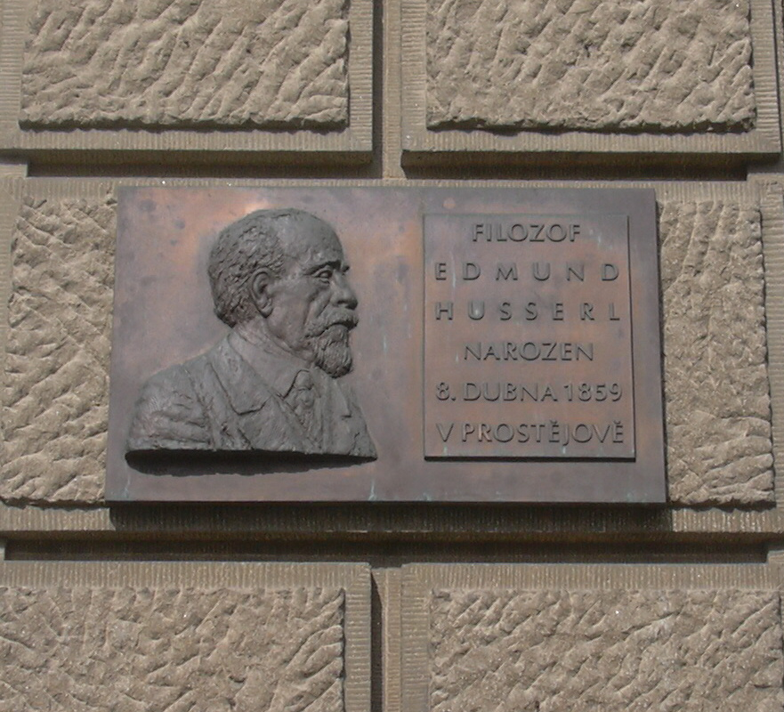

|
HOME
 Plaque commemorating Husserl in his home town of Prostějov, Czech RepublicНижеследующая публикация представляет собой перевод первоначального текста лекций, прочитанных Гуссерлем 23 и 25 февраля 1929 года в Сорбонне в амфитеатре Декарта под общим названием “Введение в трансцендентальную феноменологию”. Приглашение к выступлению исходило от Института германистики и Французского философского общества. Живой интерес, вызванный его выступлением (повторенным с небольшими изменениями в начале марта того же года в Страсбурге), побудил Гуссерля разработать на основе текста докладов произведение, предназначенное для печати. Из этих усилий родились “Картезианские медитации”, опубликованные в 1931 году в Париже на французском языке. “Парижские доклады” по отношению к этому знаменитому произведению позднего периода творчества философа выступают, таким образом, в качестве некоего “прафеномена”. Ориентация на Картезия и размышления по поводу сходств и различий феноменологического проекта и дeкартовской философии характерны для различных стадий идейного развития Гуссерля. Но в работах 1929 года, в “Парижских докладах”, а затем и в “Картезианских медитациях”, философ особенно ясно указывает как на то, чем он сам обязан отцу новоевропейской философии, так и на то, что разделяет их непроходимой пропастью. В соответствии со своим первоначальным названием, текст “Парижских докладов” содержит в себе достаточно полное освещение различных задач, проблем и направлений исследования, которые впервые или вновь наметила феноменология. Ясность и четкость формулировок, обозримость связей между различными областями формулировок, обозримость связей между различными областями феноменологической дескрипции делают это произведение интересным не только с исторической точки зрения, но и как краткое изложение самих основ феноменологии в гуссерлевском ее варианте. Гуссерь считал себя прямым продолжателем пути, однозначно проложенным Декартом. Все же, ради исторической справедливости не следует забывать, что этих двух великих философов разделяют еще и многочисленные труды некоторых весьма серьезных людей, тоже в большой мере стоявших на основе, заложенной Декартом, и тоже занявших заслуженное место в истории философии – Локка, Беркли, Юма, и в конце концов – также Канта и Шопенгауера. Это, конечно, не в какой мере не занижает ценность фундаментально нового подхода Гуссерля, но просто нам может показаться интересным все же немного разнообразить свое представление о развитии этой новой, правда сейчас немного позабытой, но бессомненно уникальной и перспективной отрасли философии – феноменологии. (А.А.) Возможность говорить о новой феноменологии в этом достославном месте французской науки наполняет меня радостью по особым причинам. Ни один философ прошлого не оказал столь решающего воздействия на смысл феноменологии, как величайший мыслитель Франции Рене Декарт. Его она должна почитать как своего подлинного праотца. Нужно прямо сказать о том, что изучение “Картезианских Медитаций” способствовало новому оформлению становящейся феноменологии и сообщило ей ту смысловую форму, которую она имеет сейчас, и благодаря которой ее можно было бы назвать новым картезианством, картезианством XX века. Исходя из этого, я, пожалуй, уже заранее смогу заручиться Вашим расположением, если я начну с тех мотивов “Meditationes de prima philosophia”, которые, как я думаю, имеют непреходящее значение, и, вслед за этим, обозначу те пре- и новообразования, из которых берет начало своеобразие феноменологического метода и проблематики. Каждый новичок в философии знает достопримечательный ход мысли в “Медитациях”. Как мы помним, их целью является полная реформа философии, завершенная реформой всех наук. Ибо все они – лишь несамостоятельные члены некой универсальной науки, философии. Только в ее систематическом единстве они могут быть приведены к подлинной рациональности, недостававшей им в том виде, в котором они существуют до сих пор. Требуется радикально новое построение, удовлетворяющее идее философии как универсального единства наук в единстве абсолютно рационального обоснования. Это требование воплощается у Декарта в субъективно обращенной философии. Это обращение к субъекту (Subjektive Wendung) выполняется в две ступени. Во-первых: каждый, кто всерьез хочет стать философом, должен раз в жизни вернуться к самому себе и попытаться, ниспровергнув в себе все предданные научные знания, взяться за новое их построение. Философия есть всецело личное дело философствующего. Речь идет о е г о sapientia universalis(1), то есть о е го стремящемся к универсальности знании, – при этом о подлинно научном, таком, за которое он мог бы быть абсолютно ответственным от начала и в каждом его продвижении, – ответственным из его абсолютно усматриваемых оснований. Я могу стать подлинным философом лишь благодаря моему свободному решению стремиться в моей жизни к достижению этой цели. Если я решился на это и, тем самым, сделал выбор в пользу первоначальной абсолютной нищеты и ниспровержения, то первое, что мне нужно осмыслить, – это то, как я могу найти абсолютно надежное начало и метод дальнейшего продвижения там, где меня не может поддержать ни одна наличная наука. Таким образом, Картезианские Медитации не следует понимать как частное занятие философа Декарта, но как прообраз необходимых размышлений (Meditationen) каждого вновь начинающего философа вообще. Если теперь мы обращаемся к этому для нас, сегодняшних, столь странному содержанию “Медитаций”, то тем самым тотчас происходит возвращение к философствующему ego во втором и более глубоком смысле. Это – знаменитое, составляющее эпоху возвращение к ego чистых cogitationes (2). Это то ego, которое обнаруживает себя как единственное аподиктически достоверно сущее, лишая, в то же время, значимости бытие мира как не гарантированное от возможного сомнения. Это ego осуществляет вначале подлинно солипсистское философствование. Оно ищет аподиктически достоверных путей, благодаря которым в чисто внутренней сфере (Innerlichkeit) можно раскрыть объективно внешнее. У Декарта, как известно, это происходит так, что сначала раскрываются существование Бога и его veracitas(3), а затем, с их помощью, – объективная природа, дуализм субстанций, короче говоря, – объективная почва позитивных наук и они сами. Все выводы делаются на основании тех принципов, которые имманентны, врождены ego. Так у Декарта. Теперь мы спрашиваем: сохраняют ли эти мысли при критическом рассмотрении какое-то непреходящее значение? Могут ли они придать нашему времени животворные силы? В любом случае сомнительно, чтобы позитивные науки, которые благодаря этим “Медитациям” должны были получить абсолютно рациональное обоснование, хотя бы в малой степени заботились о нем. Конечно, в наше время, несмотря на блестящее трехсотлетнее развитие, они чувствуют серьезные препятствия, возникшие из-за неясности их оснований. Но все же им не приходит в голову, заново образовывая систему основных понятий, вернуться к “Картезианским Медитациям”. С другой стороны, верно все же то, что “Медитации” в совершенно особом смысле составили эпоху в философии, а именно, как раз благодаря их возвращению к ego cogito (4) Декарт действительно вводит философию совершенно нового вида. Эта философия предпринимает, изменяя весь стиль, радикальный поворот от наивного объективизма к трансцендентальному субъективизму, который во все новых и всегда недостаточных попытках стремится к своей чистой окончательной форме. Не должна ли, таким образом, эта продолжающаяся тенденция нести в себе некий непреходящий смысл, а для нас – великую, самой историей возложенную па нас задачу, решать которую призваны все мы? Раздробленность современной философии и ее беспомощные усилия (Betriebsamkeit) заставляют нас задуматься. Не объясняется ли это тем, что исходящие от “Медитаций” Декарта импульсы лишились своей первоначальной жизненности? Не будет ли подлинно плодотворным только тот Ренессанс, который вновь разбудит эти “Медитации”, разбудит не для того, чтобы копировать их, но, прежде всего, чтобы в возвращении к ego cogito раскрыть глубочайший смысл их радикализма и проистекающие отсюда непреходящие ценности? Во всяком случае, таким образом обозначивается путь, который привел к трансцендентальной феноменологии. Этот путь мы хотим теперь пройти вместе. Мы, как радикально начинающие философы, хотим осуществлять медитации по-картезиански, постоянно критически преобразовывая, однако, их прежнюю форму. То, что находилось лишь в зачаточном состоянии, должно быть свободно развернуто. Итак, мы, каждый для себя и в себе, начинаем с решения лишить значимости все предданные нам науки. Мы не упускаем главную цель Декарта – цель абсолютного обоснования наук; однако, вначале не должна предполагаться как предрассудок даже ее возможность. Мы удовлетворяемся тем, что вникаем в образ действий наук и узнаем из него их идеал научности как то, к чему стремится наука. В соответствии с их замыслом (Absehen), ничто не должно считаться действительно научным, если оно не обосновано полной очевидностью, то есть не может быть удостоверено через возвращение к самим вещам или обстояниям вещей (Sachverhalte) в изначальном опыте и усмотрении. Руководствуясь этим, мы, начинающие философы, берем за принцип судить только на основе очевидности и критически перепроверять саму очевидность, делая это, как само cобой разумеется, также на основе очевидности. Если вначале мы лишили науки значимости, то теперь мы находимся в донаучной жизни, и здесь, конечно, тоже достаточно очевидностей, как непосредственных, так и опосредованных. Это и только это имеем мы вначале. Отсюда вытекает для нас первый вопрос: можем ли мы указать непосредственные и аподиктические очевидности, а именно, в себе первые, т.е. такие, которые с необходимостью должны предшествовать всем прочим очевидностям? Когда мы, медитируя, выясняем этот вопрос, то сначала кажется, что такой, на самом деле в себе первой среди всех очевидностей и аподиктической предстает очевидность существования мира. К миру относятся все науки, а до них – и практическая (handelnde) жизнь. Бытие (Dasein) мира разумеется само собой прежде всего другого – настолько, что никто не может даже подумать о том, чтобы эксплицитно выразить его в каком-либо положении. Ведь мы имеем опыт мира, в котором этот мир как постоянно и несомненно сущий находится перед нами. Но действительно ли эта опытная очевидность, несмотря на свою самопонятность, аподиктична, и действительно ли она в себе первая, предшествующая всем остальным? И то, и другое мы вынуждены будем отрицать. Не оказывается ли, в частности, многое чувственной видимостью? Не случается ли иногда так, что даже целостная, обозримая как единство связь опыта обесценивается как просто сон? Мы не хотим принимать всерьез попытку Декарта с помощью слишком уж поверхностной критики чувственного опыта доказать мыслимость небытия мира, несмотря на то, что он постоянно дан в опыте. Мы удерживаем лишь то, что для целей радикального обоснования науки очевидность опыта в любом случае нуждалась бы сначала в критике ее значимости и действенности (Tragweile), и что мы, таким образом, не можем считать ее несомненной и непосредственно аподиктичной. Соответственно, недостаточно полагать как незначимые все предданные нам пауки, трактовать их как предрассудки; мы должны лишить наивной значимости также и их универсальную почву, почву опыта мира. Бытие мира не может более быть для нас само собой разумеющимся фактом, но лишь проблемой значимости. Остается ли для нас теперь вообще какая-либо бытийная почва, почва для каких-либо суждений, очевидностей, чтобы на ней – и аподиктически – можно было обосновать универсальную философию? Разве не является мир обозначением для универсума сущего вообще? И если ему не суждено быть в себе первой почвой суждения, то, скорее, вместе с его существованием уже предположена в себе более первичная бытийная почва? Здесь мы, полностью следуя Декарту, делаем великий поворот, который, правильно осуществленный, ведет к трансцендентальной субъективности: поворот к ego cogito как к аподиктически достоверной и последней почве для с у ж д е н и я, на которой должна быть основана всякая радикальная философия. Задумаемся: как радикально медитирующие философы мы не имеем сейчас ни значимой для нас науки, ни сущего для пас мира. Вместо того, чтобы просто существовать, то есть естественным образом иметь для нас значимость в полагании бытия в сфере опыта (im Seins glauben der Erfahrung), он для нас есть еще только лишь притязание на бытие. Это касается также и всех других Я, так что мы уже не можем с полным правом употреблять множественное число в коммуникативном смысле. Ведь другие люди и звери даны мне благодаря чувственному опыту, на значимость которого я не могу полагаться в силу того, что она теперь стоит под вопросом. Вместе с Другими я, конечно, теряю также и весь строй социальности и культуры, короче говоря, весь конкретный мир есть для меня не сущий, по лишь феномен бытия. Но как бы ни обстояло дело с притязанием на действительность этого феномена бытия, имеем ли мы тут дело с бытием или только с видимостью, он сам как мой феномен в любом случае не есть ничто, но именно то, что вообще делает для меня возможным бытие и видимость. И обратно: если я воздерживаюсь, как я это свободно мог сделать и сделал, от любого полагания в опыте, так что бытие мира опыта остается для меня незначимым, то все же остается это воздержание как то, что оно в себе есть вместе с целым потоком жизни опыта и всех отдельных ее феноменов, являющихся вещей, других людей, объектов культуры и т.д. Все остается так, как было, лишь за тем исключением, что я, вместо того, чтобы запросто принимать все как сущее, воздерживаюсь от всяких точек зрения в отношении бытия и видимости. Я должен воздерживаться также и от прочих моих мнений, суждений, оценивающих точек зрения в отношении мира как предполагающих бытие мира, но и для них в качестве только феноменов воздержание не означает их исчезновения. Таким образом, это универсальное запрещение всяких точек зрения по отношению к объективному миру, которое мы называем феноменологическим эпохе, становится как раз тем методическим средством, благодаря которому я в чистоте схватываю себя как то Я и ту жизнь сознания, в которой и благодаря которой весь объективный мир есть для меня, и есть так, как он есть именно для меня. Все относящееся к миру, все пространственно-временное бытие есть для меня благодаря тому, что я испытываю его, воспринимаю его, вспоминаю, сужу или как-либо мыслю о нем, оцениваю его или стремлюсь к нему и т.д. Как известно, все это Декарт обозначает как cogito. Для меня мир есть вообще не что иное, как осознанное в таких cogitationes сущее и для меня значимое. Весь его смысл и бытийную значимость он получает (hat) исключительно из таких cogitationes. В них протекает вся моя жизнь в мире (Weltleben). Я не могу испытывать, обдумывать, оценивать какой-либо другой мир, не могу жить и действовать в таком мире, который не имеет смысла и значимости во мне самом и из меня самого. Когда я ставлю себя над всей этой жизнью и воздерживаюсь от любого осуществления, какого-либо полагания бытия, которое напрямик берет мир как сущий, когда я направляю свой взгляд исключительно на саму эту жизнь как на сознание о мире, тогда я обретаю себя самого как чистое ego с чистым потоком моих cogitationes. Я обретаю себя самого не как какую-то часть мира, ибо я вообще (universal) лишил мир значимости, обретаю не в качестве Я отдельного человека, но в качестве того Я, в жизни сознания которого впервые получает свой смысл и свою бытийную значимость весь мир и я сам как объект, как сущий в мире человек. Здесь мы находимся в опасном месте. Кажется очень легким, следуя Декарту, постичь чистое ego и его cogitationes. И все же, здесь мы как бы стоим на узкой тропинке над бездной, и от того, сможем ли мы спокойно и уверенно идти по ней, зависят наши жизнь и смерть в философии. Декарт искренне желал радикально избавиться от предрассудков. Однако благодаря новым исследованиям, особенно благодаря прекрасным и основательным исследованиям г.г. Жильсона(5) и Койре(6), мы знаем, в какой значительной степени схоластика скрыто и как непроясненный предрассудок присутствует в “Медитациях” Декарта. Но дело не только в этом; прежде всего мы должны отвергнуть проистекающие из ориентации на математическое естествознание и едва ли заметные для нас самих предрассудки; а именно, как будто бы в случае ego cogito речь идет об аподиктической и первичной аксиоме, которая вместе с другими (выводимыми из нее) создает фундамент для дедуктивной науки о мире, науки ordine geometrico (7). В связи с этим, нельзя считать чем-то само собой разумеющимся то, что мы в нашем аподиктически чистом ego спасли какой-то маленький кусочек мира как то, что для философствующего Я является единственно бесспорным, и что теперь задача состоит только в том, чтобы благодаря правильно сделанным выводам в соответствии с врожденными ego принципами постепенно раскрыть остальной мир. К сожалению, у Декарта дело обстоит именно так, когда он совершает малозаметный, но роковой поворот, превращающий ego в substantia cogitans(8), в отдельный человеческий animus(9), в исходный пункт для умозаключений в соответствии с принципом каузальности, короче говоря, тот поворот, благодаря которому он стал отцом абсурдного трансцендентального реализма. От всего этого мы свободны, если мы остаемся верны радикализму самоосмысления и, тем самым, принципу чистой интуиции, если мы, таким образом, не допускаем в качестве значимого ничего, что не дано нам в открытом благодаря эпохе поле ego cogito действительно и, сначала, совершенно непосредственно; следовательно, если мы не утверждаем ничего, что сами не видим. В этом Декарт ошибся, и получилось так, что он, подошедший к величайшему из всех открытий и уже некоторым образом сделавший его, все же не постиг его подлинного смысла, не постиг смысла трансцендентальной субъективности и, таким образом, не перешагнул порог подлинной трансцендентальной философии. Свободное эпохе в отношении бытия являющегося и вообще значимого для меня в качестве действительного мира – действительного в первоначальной естественной установке – как раз и показывает этот величайший и удивительнейший из всех фактов, а именно то, что я и моя жизнь остается незатронутой в своей бытийной значимости независимо от того, существует мир или нет и вообще независимо от какого-либо по этому поводу решения. Если я в естественной жизни говорю: “Я есть, я мыслю, я живу”, то это значит: Я, эта человеческая личность среди других людей в мире, благодаря моему телу находящаяся в реальной связи природы, в которую теперь включены также и мои cogitationes, мои восприятия, воспоминания, суждения и т.д. как психофизические факты. Так понятые, я и все мы, люди и животные, суть темы объективных наук, биологии, антропологии, зоологии и психологии. Душевная жизнь, о которой говорит вся психология, понимается как душевная жизнь в мире. Феноменологическое эпохе, которого требует от меня, философствующего, сам ход очищенных “Картезианских медитаций”, исключает из поля моего суждения как значимость бытия объективного мира вообще, так и науки о мире уже просто как факты мира. Таким образом, для меня нет никакого Я и никаких психических актов, психических феноменов в смысле психологии, как нет для меня и меня самого в качестве человека, нет моих собственых cogitationes как составных частей некоего психофизического мира. Однако вместо этого я достиг самого себя, достиг теперь уже только как такое чистое Я с чистой жизнью и чистыми способностями (например, очевидной способностью к воздержанию от суждений), благодаря которому бытие этого мира и соответстующее так-бытие вообще имеют для меня смысл и возможную значимость. Если мир, поскольку его возможное небытие не устраняет моего чистого бытия, но даже предполагает его, называется трансцендентным, но это мое чистое бытие или мое чистое Я называется трансцендентальным. Благодаря феноменологическому эпохе естественное человеческое Я, и притом мое, редуцирует себя к трансцендентальному, – это и имеется в виду, когда идет речь о феноменологической редукции. Здесь, однако, необходимы дальнейшие шаги, с помощью которых то, что уже было достигнуто, только и может быть правильно использовано. Какое начало может быть положено с помощью трансцендентального ego философски? Конечно, его бытие очевидным – для меня, философствующего, – образом предшествует в познавательном отношении всякому объективному бытию. В определенном смысле оно есть основание и почва, на которой разворачивается всякое – верное или неверное – объективное познание. Но означает ли такое предшествование и такая предположенность во всяком объективном познании, что оно для этого объективного познания есть основа познания в обычном смысле? Мысль, которая напрашивается как искушение – искушение всех реалистических теорий. Однако искушение искать в трансцендентальной субъективности предпосылки для полагания существования субъективного мира исчезает, когда мы подумаем о том, что все умозаключения, которые мы осуществляем, схваченные чисто, сами протекают в трансцендентальной субъективности, и что все относимые к миру подтверджения свою меру имеют в самом мире, таком, каков он – себя самого дающий и подтверждающий – есть в опыте. Мы не считаем, конечно, что великая мысль Картезия о том, что глубочайшее обоснование объективных наук и бытия самого объективного мира следует искать в трансцендентальной субъективности, является ложной. Иначе мы бы не следовали за ним по путям его медитаций, хотя бы даже и критически. Но, быть может, вместе с картезианским открытием ego раскрывает себя также и некая новая идея обоснования, а именно, трансцендентального обоснования. Действительно, вместо того, чтобы использовать ego cogito как голое аподиктическое положение и как абсолютно фундирующую предпосылку, мы обращаем наше внимание на то, что феноменологическое эпохе вместе с безусловно аподиктическим Я есть открыло нам (или мне, философству-ющему) новую бесконечную сферу бытия, а именно, как сферу нового трансцендентального опыта. И вместе с ним – также и возможность трансцендентального опытного познания и трансцендентальной науки. Здесь раскрывается некий в высшей степени значительный познавательный горизонт. Феноменологическое эпохе редуцирует меня к моему трансцендентальному чистому Я, и, по крайней мере сначала, я, таким образом, есть в определенном смысле solus ipse(10) однако не как обычный, как будто бы после падения всех светил сохранившийся человек во все еще сущем мире. Если я исключил мир из поля моего суждения как получающий бытийный смысл из меня и во мне, то я, предшествующее ему трансцендентальное Я есть единственное полагаемое и положенное в суждении. И теперь я должен найти некую, совершенно своеобразную науку, своеобразную потому, что она, творимая исключительно из моей и в моей трансцендентальной субъективности, также и значение должна иметь – по крайней мере сначала – только для нее, найти трансцендентально-солипсистскую науку. Таким образом, не ego cogito, но наука об ego, чистая Эгология должна была быть глубочайшим фундаментом философии в картезианском смысле универсальной наукой и должна была доставлять но крайней мере основную часть ее абсолютного обоснования. И эта наука уже имеется как первичная трансцендентальная феноменология; первичная, и, таким образом, не полная, которая, конечно, включает в себя и дальнейший путь от трансцендентального солипсизма к трансцендентальной интерсубъективности. Чтобы все это сделать понятным, вначале требуется упущенное Декартом раскрытие бесконечного поля трансцендентального опытного самопознания (Selbtserfahrung) ego. Такое опытное самопознание, оцененное даже как аподиктическое, как известно, и в его размышлениях играет определенную роль, однако он был далек от мысли раскрыть ego в полной конкретности его трансцендентального бытия (Daseins) и жизни и увидеть в нем целое поле для работы, которое необходимо систематически проследить в его бесконечностях. Для философа как фундаментальное уразумение в центр должно быть поставлено то, что он в установке трансцендентальной редукции может последовательно рефлектировать на свои cogilationes и на их чисто феноменологическое содержимое (Gehall), и при этом может всесторонне раскрывать свое трансцендентальное бытие в его трансцендентально-временной жизни и в его способностях. Здесь речь явно идет о параллели к тому, что психолог в своей установке на существование мира называет внутненним опытом или опытом самости. Далее – и это имеет величайшее, даже решающее значение – необходимо принять во внимание то (это, кстати, заметил и Декарт), что, например, эпохе но отношению к миру (des Weltlichen) ничего не меняет в том, что опыт есть опыт этого находящегося в мире, и, таким образом, соответствующее сознание есть сознание о нем; мимо этого невозможно пройти с небрежностью. Схема ego cogito должна быть пополнена еще одним членом: каждое cogito имеет в себе как разумеемое (Verincintes) свое cogitatum(11). Восприятие дома, даже если я воздерживаюсь от полагания в этом восприятии (des Wahrnehmungsglaubens), взятое так, как я его переживаю, есть все же восприятие именно этого дома, так-то и так-то являющегося, показывающего себя в таких-то определенностях, с такой-то стороны, вблизи или вдали. Точно так же ясное или смутное воспоминание есть воспоминание о смутно или ясно представленном доме, и даже ложное суждение есть разумение в суждении (Urteilsiiiemung) такого-то и такого-то разумеемого положения вещей. Основное свойство форм сознания, в которых я живу как Я, есть так называемая и н т е н ц и о н а л ь н о с т ь, есть соответствующее осознание (Bewussthaben) чего-либо. К этому Что сознания принадлежат также такие бытийные модусы, как наличие сущий, предположительно сущий, недейст-вительно (nichtig) сущий, а кроме того, модусы сущего как видимости, как ценности, как блага и т.д. Феноменологический опыт как рефлексия должен удерживаться в стороне от всех надуманных конструкций и приниматься как подлинный именно в той конкретности, именно с тем смысловым и бытийным содержанием, в котором он себя проявляет. К подобным надуманным конструкциям относится и доктрина сенсуа-лизма, в которой сознание толкуют как комплекс чувственных данных, а затем, когда требуется, задним числом добавляют гештальт-качества (Gestaltqualitaten), препоручая им заботу о целостности. Это в корне неверно уже в психологической, ориентированной на мир установке, а в трансцендентальной – и подавно. Если феноменологический анализ в своем поступательном движении и должен указать на нечто, обозначаемое как данные ощущения, то, во всяком случае, не как на нечто первичное во всех случаях “внешнего восприятия”; в честном чисто созерцательном описании первым делом необходимо подробнее описать cogito как таковое, например, восприятие дома, описать в соответствии с его предметным смыслом и в соответствии с модусами проявления. И так – для каждого вида сознания. Обращаясь прямо к объекту сознания, я нахожу его как нечто, что дано в опыте или имеется в виду как наделенное такими-то и такими-то определениями, в [акте] суждения – как носитель предикатов суждения, в [акте] оценки – как носитель ценностных предикатов. Обращая внимание на другую сторону, я нахожу меняющиеся модусы сознания, соразмерные восприятию, воспоминанию, нахожу все то, что есть не сам предмет и не само предметное определение, а субъективный модус данности, субъективный способ явления, такой, как перспективы или различия смутности и отчетливости, внимательности и невнимательности etc. Таким образом, если я как медитирующий философ, который стал при этом трансцендентальным ego, осуществляю поступательное самоосмысле-ние, то это значит, что я вступаю в открытый бесконечный трансцендентальный опыт, и, не удовлетворяясь смутным ego cogito, следую за непрерывным потоком когитирующего бытия и жизни, замечаю все, что можно здесь увидеть, эксплицируя, вникаю, в описании схватываю в понятиях и суждениях, причем только в таких, которые совершенно изначально почерпнуты из этих состояний созерцания. Таким образом, в истолкованиях и описаниях руководящим является трехчленный термин, как уже было сказано; ego cogito cogitatum. Если сначала мы отвлечемся от идентичного Я, которое при этом все же присутствует в определенной мере в каждом cogito, то нам будет легче отметить различия, выделяющиеся в рефлексии в самом cogito, и тогда разделяются дескриптивные типы, которые в языке очень смутно указываются как восприятие, воспоминание, продолжение осознания после воспринятия, предвосхищение, желание, воление, предикативное высказывание и т.д. Но если мы принимаем это так, как это в конкретности дано нам трансцендентальной рефлексией, то сразу же проступает уже затронутое основное различие между предметным смыслом и модусами сознания, а затем и способами явления: таким образом, проступает – рассмотренная типически – двусторонность, которая как раз и создает интенциональность, сознание как сознание о том-то и том-то. Это требует всегда двух направлений описания. При этом следует обратить внимание на то, что трансцендентальное эпохе в отношении сущего мира со всеми как-либо узнанными в опыте, воспринятыми, воспомянутыми, обмысленными, положенными в суждении объектами ничего не изменяет в том, что мир, что все эти объекты как феномены опыта, хотя и чисто как таковые, чисто как cogitata (12) соответст-вующих cogilationes, должны быть главной темой феноменологической дескрипции. Но что тогда составляет глубочайшее различие между фено-менологическими суждениями о мире опыта и естественно-объективными? Ответ может быть дан так: как феноменологическое ego я стал чистым созерцателем (Zuschauer) самого себя, и я не принимаю в качестве значи-мого ничего, кроме того, что я нахожу как неотделимое от меня самого, как мою чистую жизнь, и именно так, как изначальная, созерцательная рефлексия раскрывает мне меня самого. Как человек в естественной установке, такой, каким я был до эпохе, я наивно вживался в мир; почерпнутое из опыта сразу же (ohne weiteres) получало для меня значимость, и это было базисом для всех остальных моих точек зрения. Все это происходило во мне, но я на это не обращал внимания; меня интересовало узнанное мною в опыте, вещи, ценности, цели, но не интересовала сама жизнь моего опыта, моя заинтересованность, принятие точек зрения, мое субъективное. Как естественно живущее Я, я был трансцендентальным Я, но ничего об этом не знал. Для того, чтобы вникнуть в мое абсолютное собственное бытие, я должен был проделать феноменологическое эпохе. С его помощью я отнюдь не хочу, как Декарт, проделывать некую критику значимости, чтобы узнать, могу ли я с аподиктичностью доверять опыту, и, таким образом, бытию мира, или нет; но я хочу освоиться с тем, что мир есть для меня cogitatuin моих cogitationes, а также, как он есть в таком качестве. Я хочу не только установить, что ego cogito аподиктически предшествует для-меня-бытию мира, но хочу полностью и всеохватывающе изучить мое конк-ретное бытие как ego и увидеть при этом, что мое бытие как естественное вживание в мир опыта есть особая трансцендентальная жизнь, в которой я в наивной вере осуществляю опыт, расширяю мои наивно приобретенные убеждения относительно мира и т.д. Таким образом, суть феноменологической установки и ее эпохе состоит в том, что я достигаю последней мыслимой для опыта и познания точки зрения, в которой я становлюсь незаинтересованным созерцателем моего естественно-мирского Я и жизни Я, которое есть при этом лишь особая часть или особый слой моей раскрытой теперь трансцендентальной жизни. Незаинтересован я постольку, поскольку я “воздерживаюсь” от всех мирских интересов, которые я все же имею, и как Я – философствующий – возвышаюсь над ними и созерцаю их, беру их, так же как и все мое трансцендентальное ego, как темы описания. Так вместе с трансцендентальной редукцией происходит некоторый вид раскола в Я: трансцендентальный созерцатель возвышается над самим собой, созерцает себя, причем созерцает себя также и как прежнее, отдавшееся миру Я, таким образом, находит в себе как cogitatum себя самого как человека, а в соотносящихся с ним cogitationes находит трансцендентальную жизнь и бьтие, раскрывающие все находящееся в мире. Если естественный человек (а в нем и Я, которое хотя и трансцендентально, но ничего не знает об этом) имеет сущий в наивной абсолютности мир и науку о мире, то трансцендентальный созерцатель, осознавший себя как трансцендентальное Я, имеет мир только как феномен, то есть как cogitatum соответствующей cogitatio, как являющееся соответствующих явлений, только как коррелят. Когда феноменология тематизирует предметы сознания (безразлично какого вида – реальные или идеальные), то она тематизирует их только как предметы соответствующих модусов сознания; описание, которое стремится схватить конкретные в своей полноте феномены cogilationes, должно постоянно от предметной стороны обращаться к стороне сознания и прослеживать сплошь и рядом существующие здесь взаимосвязи. Если, напри-мер, моей темой является восприятие гексаэдра, то в чистой рефлексии я замечаю, что гексаэдр непрерывно дан как предметное единство в разно-образной и определенно связанной множественности модусов явления. Один и тот же гексаэдр – одно и то же являющееся – [мы видим] с этой или с той стороны, в этих или в тех перспективах, вблизи или вдали, с большей или меньшей ясностью и определенностью. Если мы взглянем на какую-либо поверхность гексаэдра, на какое-либо ребро или угол, какое-либо цветовое пятно, короче говоря, схватим какой-либо момент предметного смысла, то в каждом из них мы заметим то же самое: он есть единство многообразия постоянно меняющихся модусов проявления, их особых перспектив, особых различий субъективных Здесь и Там. Обращаясь к нему прямо, мы находим, например, постоянно идентичный неизменный цвет, но, рефлектируя на модусы явления, мы познаем, что он не может существовать никак иначе (иначе было бы даже немыслимо), кроме как представляясь в тех или иных цветовых оттенках (Farbenabschattungen). Единство мы имеем всегда лишь как единство из представления (Darstellung), которое есть представление самопредставления (Sich-selbst-Darstellung) цвета или грани. Cogitatum возможно лишь в особом модусе cogito. А именно, если мы берем жизнь сознания совершенно конкретно и в описании удерживаем обе стороны и их интенциональные взаимопринадлсжности, то тут открываются подлинные бесконечности и в поле зрения появляются все новые, никогда не похожие один на другой факты. Тут раскрываются структуры феноме-нологической временности. Так дело обстоит уже и тогда, когда мы пребы-ваем в пределах того типа сознания, который называется восприятием вещи. Соответственно, оно живет как некое дление (Dahindauerri), как временное протекание восприпимания и воспринятого. Это текущее самопротяжение (Sicli-fort-ersirecken), эта временность есть нечто, сущностно принадлежащее к самому трансцендентальному феномену. Любое разделение, которое мы примысливаем, также дает восприятие того же самого типа, и о любом отрезке, о любой фразе мы говорим то же самое: воспринят гексаэдр. Но эта идентичность есть имманентная дескриптивная черта такого интенциопального переживания и его фаз, она есть определенная черта самого сознания. Части и фазы восприятия не наклеены внешне одна на другую, они едины, так, как едино именно сознание и только сознание, а именно, они едины в сознании об одном и том же. Дело не обстоит таким образом, что сначала есть вещи, которые затем проникают в сознание, так что одно и то же наличие здесь и проникло там, но сознание и сознание, одно cogito и другое связываются в единое, объединяющее их обоих cogito, которое как некое новое сознание опять-таки есть сознание о чем-то, и работа этого синтетического сознания заключается в том, что в нем сознается “одно и то же”, одно как единое. Здесь на примере мы встречаемся с единственной в своем роде чертой синтеза как основным своеобразием сознания, и вместе с ней тотчас выступает различие между реальными (reell), и идеальным (ideell), исключительно интенциональным содержанием сознания (13). Предмет восприятия, рассмотренный феноменологически, не есть некая реальная (reell) часть в воспринимании и в его протекающих, синтетически объединяющихся перспективах и прочих многообразиях явления. Два явления, которые благодаря синтезу даются мне как явления одного и того же, реально (reell) разделены, и как разделенные реально (reell), не имеют общих данных; они имеют [лишь] в высшей степени схожие и подобные моменты. Один и тот же видимый гексаэдр есть один и тот же интенционально: то, что дано как пространственно-реальное, есть идеально-идентичное, идентичное интенции в многообразных восприниманиях, имманентное модусам сознания, Я-актам; но не как реальное (reell) данное, а как предметный смысл. Один и тот же гексаэдр может быть для меня, далее, также и в различных вторичных воспоминаниях (Wiedererinnerungen), ожиданиях, ясных или пустых представлениях как одно и то же интенциональное, как идентичный субстрат для предикаций, для оценок и т.д. Эта тождественность (Selbigkeil) всегда находится в самой жизни сознания и усматривается благодаря синтезу. Так через всю жизнь сознания проходит отношение сознания к предметности, и это отношение раскрывается как сущностная особенность каждого сознания – способность во все новых и весьма разнообразных модусах сознания синтетически переходить к сознанию единства – сознанию об одном и том же. В тесной связи с этим находится и то, что ни одно отдельное cogito не изолировано в ego, так что в конце концов оказывается, что вся универсальная жизнь в своем флуктуировании, в своем гераклитовском потоке есть некое универсальное синтетическое единство. Ему мы более всего обязаны тем, что трансцендентальное ego не только просто есть, но есть для самого себя, как обозримое конкретное единство, живущее во все новых модусах сознания, как единое и постоянно объективирующее себя в форме имманентного времени. Но не только это. Потенциальность жизни так же существенна, как и ее актуальность, и эта потенциальность не есть некая пустая возможность. Каждое cogito, например, внешнее восприятие или вторичное воспоминание и т.д., несет в самом себе имманентную ему потенциальность, которая может быть раскрыта, – потенциальность возможных, относимых к одному и тому же интенциональному предмету и осуществимых из Я переживаний. В каждом [cogito] мы находим, как говорят в феноменологии, горизонты, причем в различном смысле. Восприятие поступательно разворачивается и намечает горизонт ожиданий как горизонт интенциональности, указывая на грядущее как воспринятое, таким образом, на будущие ряды восприятии. Но каждое из них вместе с собой также вводит потенциальности, такие, как “Я мог бы направить свой взгляд не сюда, а туда”, мог бы организовать ход восприятия чего-либо не так, а иначе. Каждое вторичное воспоминание отсылает меня ко всей цепочке возможных вторичных иоспоминаний вплоть до актуального Теперь, и в каждом пункте имманентного времени – к тому, что нужно раскрыть в качестве сопринадлежащего ему настоящего и т.д. Все это – интенциональные исправляемые законами синтеза структуры. Я могу опросить каждое интенциональное переживание, и это значит, что я могу проникнуть в его горизонты и истолковать их; при этом я, с одной стороны, раскрываю потенциальности моей жизни, а с другой стороны, проясняю в предметном отношении разумеемый смысл. Таким образом, ицтенциональный анализ есть нечто совершенно иное, чем анализ в обычном смысле. Жизнь сознания – и это так уже для чистой имманентной психологии (Innenpsychologie) как параллели к трансцендентальной феноменологии – не есть некая голая связь данных, будь то скопление психических атомов, или некое целое элементов, которые едины благодаря гештальт-качествам. Интенциональный анализ есть раскрытие актуальностей и потенциальностей, в которых конституируются предметы как смысловые единства, и всякий смысловой анализ осуществляется в переходе от реальных (reell) переживаний к намеченным в них интенциональным горизонтам. Это позднее уразумение предписывает феноменологическому анализу и дескрипции совершенно новую методику, методику, которая действует везде, где должны исследоваться предмет и смысл, вопросы о бытии, о возможности, об истоках, о правомерности. Любой ицтенциональный анализ возвышается над моментально и реально (reell) данным переживанием имманентной сферы, причем так, что он, раскрывая потенциальности, которые сейчас указаны реально (reell) и как горизонты, представляет множества новых переживаний, в которых становится ясным то, что подразумевалось только имплицитно и, таким образом, уже было интенциональным. Если я смотрю на гексаэдр, то я сразу же говорю: Я вижу его действительно и в собственном смысле только с одной стороны. И все же очевидно, что то, что я сейчас воспринимаю, есть, нечто большее, что восприятие заключает в себе некое полагание (Meinung), хотя и несозерцательное, благодаря которому увиденная сторона имеет свой смысл как только сторона. Но как раскрывается это полагание большего (Mehrmeinung), как, собственно говоря, становится впервые очевидно, что я подразумеваю нечто большее? Именно благодаря переходу к синтетической последовательности возможных восприятии, такой, которую я бы имел, если бы я, как я это могу, осмотрел бы вещь со всех сторон. Феноменология постоянно разъясняет это полагание (das Meinen), соответствующую интенциональность, благодаря тому, что она производит такие смыслоисполняющие синтезы. Истолковать универсальную структуру трансцендентальной жизни сознания в ее смыслоотнесенности и смыслообразовании – гигантская задача, стоящая перед дескрипцией. Исследование, конечно же, проходит различные ступени. Ему не пре-пятствует то, например, что здесь – царство субъективного потока, и что желание пользоваться методикой образования понятий и суждений, которая является руководящей в объективных, точных науках, было бы здесь пустой мечтой. Конечно, жизнь сознания – поток, и каждое cogito текуче, не имеет фиксируемых окончательных элементов и отношений. Но в потоке господ-ствует очень хорошо выраженная типика. Восприятие – один всеобщий тип, вторичное воспоминание – другой тип, [третий] – пустое сознание, а именно, ретенциональное, в котором я осознаю часть мелодии, которую я больше не слышу, но имею еще в поле сознания, вне созерцания, и все же – эту часть мелодии; подобно этим, существуют всеобщие, четко выраженные типы, которые опять-таки разделяются на тип восприятия пространственной вещи и тип восприятия человека, психофизического существа. В каждом таком типе я, описывая его всеобщим образом, могу исследовать его структуру, а именно, его интенциональную структуру, ибо он есть именно интенциональный тип. Я могу спрашивать, как один переходит в другой, как он образуется, изменяется, какие формы интенционального синтеза необходимо в нем присутствуют, какие формы горизонтов он необходимо в себе содержит, какие формы раскрытия и исполнения ему принадлежат. Этим занимается трансцендентальная теория восприятия, т.е., интенциональный анализ восприятия, трансцендентальная теория воспоминания и связей созерцаний вообще, трансцендентальная теория суждений, теория воли и т. д. Всегда дело заключается в том, чтобы не просто, подобно объективным наукам о фактах, заниматься опытами и реально анализировать их данные, но чтобы следовать за линиями интенционального синтеза, раскрывать их так, как они интенционально и горизонтно намечены, причем сами горизонты должны быть указаны, а затем и раскрыты. Поскольку уже каждое отдельное cogitatum благодаря его трансцендентально-имманетному временному протяжению есть некий синтез идентичности, сознание о непрерывно тождественном (selben), то предмет уже поэтому играет определенную роль как трансцендентальная руководящая нить для субъективных многообразии, которые его конституируют. Но при обозрении наиболее общих типов cogitata и во всеобщей интенциональной дескрипции их безразлично, восприняты или воспомянуты и т.п. те или иные предметы. Однако если мы тематизируем феномен мира, который в синтетически-едином текучем потоке восприятии также осознается как единство, соответственно, тематизируем этот удивительный тип – универсальное восп-риятие мира, и спрашиваем, каким образом должно быть понято интенционально то, что некий мир наличен (da ist) для нас, тогда, естественно, мы последовательно удерживаем синтетический предметный тип мир как cogitatum и как руководящую нить для развертывания бесконечной структуры интенциональности опыта о мире. При этом мы должны углубиться в частную типику. Мир опыта, постоянно удерживаемый в феноменологической редукции, взятый чисто как испытанный, расчленяется на пребывающие идентичными объекты. Как выглядит особенная бесконечность действительных и возможных восприятий, относящихся к какому-либо объекту? Такой вопрос мы должны задать в отношении каждого всеобщего типа объектов. Как выглядит горизонтальная интенциональность, без которой не мог бы существовать ни один объект как объект, интенциональность, отсылающая к связи мира, от которой, как показывает сам анализ интенциональности, неотмыслим ни один объект и т.д. И так – для каждого особого типа объектов, который может принадлежать миру. Идеальное (ideell) фиксирование интенциональпого типа предметов означает (и в этом легко убедиться) наличие определенной организации или порядка в интенциональных исследованиях. Другими словами: трансцендентальная субъективность есть не хаос интенциональных переживаний, но единство синтеза, многоступенчатого синтеза, в котором конституируются все новые и новые типы объектов и отдельные объекты. И каждый объект намечает для трансцендентальной субъективности некую структуру упорядоченности (Regelstruktur). Вместе с вопросом о трансцендентальной системе интенциональности, благодаря которой для ego постоянно налична (da) природа, мир – вначале в опыте как прямо видимые, осязаемые и т.д., а потом и благодаря всякой иным образом направленной на мир интенциональности – с этим вопросом мы, собственно говоря, уже находимся в пределах феноменологии разума. Разум и неразумность (Unvernunfl), понятые в самом широком смысле, не обозначают случайно-фактические способности и данности (Tatsachen), но принадлежат к самым общим структурным формам трансцендентальной субъективности вообще. Очевидность в самом широком смысле самопроявления, самоприсутствия, сути (Inneseins) самого положения вещей, самой ценности и т. п., эта очевидность не есть некое случайное происшествие в трансцендентальной жизни. Скорее, всякая интенциональность или сама есть некое сознание-очевидность, имеющее cogitatum в качестве его самого, или сущностно и горизонтно отнесена к самоданности, направлена на нее. Уже каждое прояснение есть приведение к очевидности. Каждое смутное, пустое, неясное сознание с самого начала есть все же сознание о том-то, и том-то, поскольку оно отсылает к некоторому пути прояснения, в котором полагаемое было бы дано как действительность или возможность. Каждое смутное сознание я могу допросить в отношении того, как должен был бы выглядеть его предмет. И, конечно, к структуре трансцендентальной субъективности принадлежит также и то, что в ней образуются такие мыслительные содержания (Meinungeti), на основе которых при переходе к возможной очевидности, соответственно, при приведении к ясному представлению, а равно как и в реально продолжающемся опыте, в котором и происходит действительный переход от некоторого мыслительного содержания к самому очевидному положению вещей, устанавливается не то, что было помыслено в качестве возможного самораскрытия, (Selbst), но нечто другое. Часто вместо подтверждения, исполнения происходит также и разочарование, упразднение, негация. Но все это, как типичный вид противоположных процессов – исполнения или разочарования, – принадлежит к целостной жизни сознания. Ego всегда и с необходимостью живет в cogitationes, и соответствующий предмет всегда или дан в созерцании (в сознании – он дан как существующий, в фантазирующем сознании – как якобы существующий), или не дан в созерцании, соответ-ственно, нереален (sachfeme). И всегда, исходя из него, можно задать вопрос о возможных путях к нему самому как к действительности или же как к сфантазированной возможности; можно спросить о путях, где он последовательно удостоверял бы себя как сущий, был бы достижим в единообразной континуальности очевидностей или представлял бы в них свое не-бытие. То, что некий предмет существует для меня, означает, что он значим в моей сфере сознания. Но эта значимость для меня есть лишь постольку значимость, поскольку я предполагаю, что я мог бы ее подтвердить, что я мог бы указать доступные для меня пути, т.е. свободно исполнимые опыты и прочие очевидности, в которых я был бы в непосредственном соприкосновении с ним самим, осуществил бы его как действительно здесь. Это так даже и тогда, когда мое сознание о нем есть опыт, есть сознание того, что он уже сам здесь, сам увиден. Ибо и это видение снова указывает на следующее видение, на возможность подтверждения и возможность снова и снова переводить обретенное уже в качестве сущего в модус дальнейшего подтверждения. Поразмыслите над колоссальным значением этого замечания теперь, после того, как мы стали на почву эгологии. С этой окончательной точки зрения мы видим, что здесь – и так-бытие в действительности и по истине не имеют для нас никакого иного смысла, кроме смысла – бытие из возможности самоудостоверяющего подтверждения; но видим также и то, что эти пути подтверждения и их доступность сами принадлежат ко мне, как к трансцендентальной субъективности, и только как таковые имеют какой-либо смысл. Истинно сущee, реальное или идеальное, имеет, таким образом, значение только как какой-либо особый коррелят моей собственной интенциональности, актуальной или намеченной в качестве потенциальной. Конечно, [коррелят] не какого-то отдельного cogito; например, бытие некой реальной вещи – не как [коррелят] cogito отдельного восприятия, которое я сейчас имею. Оно само и его предмет в [модусе] как интенциональной данности отсылает меня благодаря предполагаемым горизонтам к бесконечно открытой системе возможных восприятии как таковых, которые не выдуманы, но мотивированы в моей интенциональной жизни и могут лишиться своей предполагаемой значимости только тогда, когда их упраздняет противоречащий опыт; они с необходимостью совместно предположены как мои возможности, которые я, если мне ничего не препятствует, могу осуществить, переходя куда-либо, осматривая etc. Но, конечно, все это описание достаточно грубо. Необходимы в высшей степени обширные и сложные интенциональные анализы, чтобы истолковать структуры возможности в отношении горизонтов, специфически принадлежащих к каждому виду предметов, и, тем самым, сделать понятным смысл соответствующего бытия. С самого начала очевидно только одно – руководящее: то, что я имею как сущее, значимо для меня как сущее, и всякое мыслимое удостоверение происходит во мне самом, заключено в моей непосредственной и опосредованной интенциональности, в которой, таким образом, должен быть заключен также и всякий бытийный смысл. Тут мы уже находимся в кругу великих, наиважнейших проблем, проблем разума и действительности, проблем сознания и истинного бытия, т.е. тех проблем, которые в феноменологии обозначаются в целом как конститутивные проблемы. Вначале они кажутся частными феноменологическими проблемами, поскольку действительность, бытие понимают только как бытие мира, и, таким образом, думают, что тут возникает феноменологическая параллель к так называемой теории познания или критике разума, которая, как известно, обычно относится к объективному познанию, познанию реальности. Но на деле конститутивные проблемы охватывают всю трансцендентальную феноменологию и намечают совершенно всеобщий систематический аспект, который организует все феноменологические проблемы, феноменологическое конституирование какого-либо предмета означает: рассмотрение универсальности ego с точки зрения идентичности этого предмета, а именно, рассмотрение, задающееся вопросом о систематической полноте (Allheit) действительных и возможных переживаний сознания, которые намечены в моем ego как относимые к нему и имеют для моего ego значение прочного правила возможных синтезов. Проблема феноменологического конституирования какого-либо типа предметов есть вначале проблема его идеально-завершенной очевидной данности. Каждому типу предметов соответствует его типический вид возможного опыта. Что представляет собой такой опыт в соответствии с его сущностными структурами, а именно, когда мы мыслим его как выявляющий этот предмет в идеальной полноте и всесторонне? Вслед за этим – другие вопросы: как ego овладевает такой системой, овладевает даже тогда, когда актуально о ней нет никакого опыта? Наконец, каково для меня значение того, что для меня существуют предметы в своей определенности, о которых я, тем не менее, ничего не знаю и не знал? Каждый сущий предмет есть предмет для некоего универсума возможных опытов, причем понятие опыта мы должны значительно расширить, расши-рить до понятия правильно понятой очевидности. Каждому возможному предмету соответствует возможная система такого рода. Трансцендентальна, как уже говорилось, поступательно разворачивающаяся фиксация предметных определений (Gegenstandsindex) некоей совершенно определенным образом соответствующей [предмету] универсальной структуры ego в соответствии с его действительными cogitata и в соответствии с его потенциальностями, со способностями. Однако, это и есть сущность ego: быть в форме действительного и возможного сознания, возможного – в соответствии с в нем самом находящимися формами Я могу, формами способности. Ego есть то, что оно есть, в отношении к интенциональным предметностям, оно всегда имеет сущее и возможным образом сущее, и, таким образом, его сущностное своеобразие состоит в том, чтобы постоянно образовывать системы интенциональности и удерживать уже образованные, реестр которых есть им положенные, обмысленные, оцененные, трактуемые, сфантазированные и фантазируемые предметы. Но есть и само ego, и его бытие есть бытие для себя самого, и его бытие со всем ему принадлежащим особо-сущим также конституировано в нем самом и конституирует себя для себя дальше. Для-себя-самого-бытие ego есть бытие в постоянном самоконституировании, которое, со своей стороны, является фундаментом для любого конституирования так называемого трансцендентного, предметности в мире. Таким образом, создание фундамента конститутивной феноменологии есть создание в учении о конституировании имманентной временности и упорядоченных в ней имманентных переживаниях некоторой эгологической теории, благодаря которой постепенно становится понятным, как конкретно возможно и понятно для-себя-самого-бытие ego. При этом проявляется многозначность темы ego; в различных слоях феноменологической проблематики она различна. В первых, самых общих структурных наблюдениях как результат феноменологической редукции мы находим [структуру] ego cogito cogitata, а именно, мы встречаемся с множественностью cogitata, [множественностью актов] Я воспринимаю, Я вспоминаю, Я желаю и т.д., и первое, что мы при этом замечаем – это то, что множественные модусы cogito имеют точку тождества, центрированы, и это проявляется в том, что Я, одно и то же Я сначала осуществляет акт Я мыслю, затем – акт Я оцениваю как видимость и т.д. Становится заметен двойной синтез, двойная поляризация. Многие, хотя и не все модусы сознания, которые протекают здесь, синтетически едины как способы осознания одного и того же предмета. Но, с другой стороны, все cogitationes и, прежде всего, все мои точки зрения имеют структурную форму [ego] cogito, обладают Я-поляризацией. Тут, однако, следует заметить, что центрирующее ego не есть некая пустая точка или полюс, но, благодаря закономерности генезиса, вместе с каждым исходящим от него актом обретает некоторую устойчивую определенность. Например, если я в акте суждения решил утверждать некоторое так-бытие, то этот мимолетный акт проходит, но я теперь уже есть такое Я, которое решило это так-то, я устойчиво нахожу себя самого как Я определенных устойчивых для меня убеждений. И так – для каждого вида решений, например, ценностных или волевых. Таким образом, мы имеем ego не как голый пустой полюс, но именно как постоянное и устойчивое Я оставшихся убеждений, привычек, в изменении которых впервые конституируется единство личностного Я и его личностного характера. От него, однако, следует отличить ego в полной конкретности, которое конкретно лишь в текучем многообразии его интенциональной жизни вместе с полагаемыми в ней и конституирующимися для нее предметами. Поэтому об ego мы говорим также и как о конкретной монаде. Поскольку Я как трансцендентальное ego таково, что я могу обнаружи-вать себя самого как ego в первом и во втором смысле и вникать (inne werden) в мое действительное и истинное бытие, то это есть, таким образом, конститутивная проблема, причем самая радикальная. Таким образом, конститутивная феноменология поистине охватывает всю феноменологию, хотя она и не может быть начата как такая; феноменология может начинаться лишь с выявления типики сознания и с ее интенционального развертывания, которое лишь позднее показывает смысл конституивной проблематики. И все же феноменологичекая проблема сущностного анализа конституирования для ego реальных объективностей и, тем самым, проблема феноменологической объективной теории познания образует большую самостоятельную область. Но для того, чтобы противопоставить эту теорию познания обычной, требуется гигантский методический прогресс, и поэтому я перейду к этому позже, а чтобы облегчить вам понимание, вначале расскажу вам о некоторых конкретностях. Каждый из нас в результате феноменологической редукции оказался сведенным к своему абсолютному ego, и нашел себя с аподиктической достоверностью как фактически сущего. Обозревая, ego находило многообразные дескриптивно схватываемые и требующие интен-ционального развертывания типы, да и само могло легко продвигаться в интенциональном раскрытии своего ego. Но не случайно у меня неоднократно вырывались выражения сущность и сущностный; эти понятия тождественны определенному, феноменологией впервые проясненному по нятию Apriori. Ведь ясно: когда мы истолковываем и описываем какой-ни-будь когитативный тип – восприятие, воспринятое, ретенция и удержанное в ретенции, воспоминание и воспомянутое, высказывание и высказанное, стремление и то, к чему стремление и т.д., именно как тип, то это ведет к результатам, которые сохраняются, даже если мы абстрагируемся от фактического. Для типа индивидуальность любого факта, например, факта теперь, в данный момент протекающего восприятия стала совершенно не важна; не важна и такого рода всеобщность, что я, это фактическое ego, вообще имею среди моих фактических переживаний именно такое переживание этого типа, и описание вовсе не зависит от установления индивидуальных фактов и от их существования. И так – для всех эгологических структур. Например, я осуществляю анализ типа “чувственный, пространственно-вещный опыт”; я систематически вхожу в конститутивное рассмотрение того, как такой опыт мог бы и должен был бы согласованно продвигаться, если одна и та же вещь полностью проявляла бы себя в соответствии со всем, что в ней как вещи должно быть помыслено; и тогда открывается величайшего значения познание, познание того, что то, что для меня как некоего ego вообще может быть истинно сущей вещью, apriori и с сущностной необходимостью подлежит сущностной форме определенно связанной структурной системы возможного опыта с априорным многообразием специфически связанных структур. Очевидно, что я совершенно свободно могу варьировать свое ego в фантазии, могу рассматривать типы как чисто идеальные возможности отныне лишь возможного ego и некоего возможного ego вообще (как свободной модификации моего фактического), и так я получаю сущностные типы, априорные возможности и соответствующие законы; и точно так же – всеобщие сущностные структуры моего ego как некого мыслимого вообще, без которых я вообще или apriori не могу себя мыслить, ибо они, как это очевидно, необходимо должны были бы существовать также и для каждой свободной модификации моего ego. Так мы поднимаемся до методического уразумения, которое, наряду с подлинным методом феноменологической редукции, в феноменологической методике является важнейшим; а именно, уразумения того, что ego, как говорили прежде, имеет колоссальное врожденное А р r i о r i, и что вся феноменология, или методически проведенное чистое самоосмысление философа, есть раскрытие этого врожденного Apriori в его бесконечном многообразии. Это и есть подлинный смысл врожденности, который старое наивное понятие как бы нащупывало, но не могло схватить. К этому врожденному Apriori конкретного ego, как говорил Лейбниц, моей монады, принадлежит, конечно, гораздо больше, чем мы смогли обсудить. К нему принадлежит (это мы сможем наметить только в общих чертах) также и Apriori Я в особом смысле, определяющем общую трехчленность структуры cogito: Я как полюс всех специфических точек зрения или Я-актов и как полюс аффектов, которые, переходя с уже конституированных предметов на Я, мотивируют его в направлении внимания и в принятии точек зрения. Ego, таким образом, имеет двойственную поляризацию: поляризацию в соответствии с многообразными предметными единствами и Я-поляризацию, центрирование, благодаря которому все интенциональности относятся к Я-полюсу. Но некоторым образом в ego косвенно становится множественной и Я-поляризация, благодаря его вчувствованиям как появляющемуся в ego в качестве приведения к временному соприсутствию, “отражению” чужих монад с чужими Я-полюсами. Я не есть просто полюс появляющихся и исчезающих точек зрения; каждая точка зрения обосновывает в Я нечто стабильное, его остающееся и в дальнейшем неизменным убеждение. Систематическое раскрытие трансцендентальной сферы как абсолютной сферы бытия и конституирования, к которой отнесено все мыслимое, представляет колоссальные трудности, и лишь в последнее десятилетие появилась ясная система методов и прояснились ранги проблем. Очень поздно, в частности, раскрылся доступ к проблемам универсальной сущностной закономерности феноменологического генезиса, прежде всего – закономерности пассивного генезиса в образовании все новых интенциональностей и апперцепции без какого-либо активного участия Я. Здесь возникает феноменология ассоциации, понятие и источник которой получают сущностно новый облик, получают прежде всего уже благодаря сначала довольно странному познанию: ассоциация есть обозначение для сущностной закономерности, врожденное Apriori, без которого ego как таковое немыслимо. С другой стороны, появляется проблематика генезиса более высокого ранга, в котором благодаря Я-актам возникают значимые образования (Geltungsgebilde), и одновременно с этим центральное Я принимает специфические Я-свойства, например, обычные убеждения, приобретенные характеры. Только благодаря феноменологии генезиса ego становится понятным как бесконечная связь синтетически взаимопринадлежных свершений (Leistungen), а именно конститутивных, которые приводят в соответствие различные смысловые оттенки существующих предметов. Становится понятно, каким образом ego есть то, что оно есть, только в некотором генезисе, благодаря которому для него интенционально, постоянно, мимолетно или длительно становятся его собственными сущие, реальные или идеальные миры; становятся таковыми из собственного смыслотворчества, в apriori возможных и решающих корректурах, исключениях недействительностей, видимостей и т.д., которые, так же как и типические смысловые процессы, вырастают имманентно. Во всем этом факт иррационален, но форма, колоссальная система форм конституированных предметов и коррелятивная система форм их интенционального априорного конституирования, неисчерпаемая бесконечность Apriori, которое раскрывается под именем феноменологии и которое есть не что иное, как сущностная форма ego как некоторого ego вообще, эта форма раскрывается в моем самоосмыслении и, соответственно, должна раскрываться. Сфера, конституирующая смысл и бытие, включает в себя все ступени реальности в качестве идеальной предметности, и, таким образом, когда мы считаем и рассчитываем, когда мы описываем природу и мир, когда мы рассуждаем теоретически, образуем положения, умозаключения, доказательства, теории, стремясь к истине, совершенствуем их и т.д., то мы создаем все новые и новые формации (Gebilde) предметов, на этот раз идеальных, которые для нас устойчиво значимы. Если мы осуществляем радикальное самоосмысление и, таким образом, возвращаемся к собственному абсолютному ego, то все это – образования свободно действующей Я-активности, упорядоченные на ступени эгологических конституирований, и каждое такого рода идеально сущее есть то, что оно есть, как реестр (Index) его конститутивной системы. Это, верно также и в отношении всех, которым я в своем мышлении и познании сообщаю значимость. Я как ego запретил наивное принятие их как значимых, но в связном процессе моего трансцендентального самораскрытия, раскрытия мною как незаинтересованным созерцателем моей конституирующей жизни, они, как и мир опыта, снова получают значимость, но теперь – чисто как конститутивные корреляты. Теперь мы переходим к тому, чтобы эту эгологически-трансцендентальную теорию конституирования бытия, которая все когда-либо для ego сущее представляет как возникшие в синтетических мотивациях его собственной интенциональной жизни образования пассивного или активного конституирования, соотнести с обычной теорией познания или теорией разума. Конечно, отсутствие той основной части феноменологической теории, ко-торая преодолевает видимость солипсизма, станет полностью ощутимым лишь в дальнейшем продвижении, и ее подобающее дополнение устранит препятствие. Проблема традиционной теории познания есть проблема трансценденции. Она, даже когда она как эмпирическая основывается на обычной психологии, все же не желает быть только голой психологией познания, но желает прояснить принципиальную его возможность. Проблема возникает в естественной установке и в дальнейшем разрабатывается в ее рамках. Я обнаруживаю себя как человека в мире, но одновременно обнаруживаю себя как испытывающего и научно познающего этот мир, включая и меня самого. Все, что для меня есть, есть благодаря моему познающему сознанию, оно есть для меня испытанное моего опыта, обмысленное моего мышления, усмотренное моего усмотрения или теория как результат моего теоретизирования. Оно есть для меня лишь как интенциональная предмет-ность моих cogitationes. Интенциональность как фундаментальная черта моей психической жизни есть свойство, реально принадлежащее мне как человеку, как, впрочем, и любому человеку в отношении его чисто психической внутренней сферы (Innerlichkeit), и уже Брентано выдвинул ее в центр эпмирической психологии человека. Таким образом, здесь мы не нуждаемся ни в какой феноменологической редукции, мы есть и остаемся на почве данного мира. Итак, понятно, что все, что для человека, что для меня есть и значимо, протекает в собственной жизни сознания, которая во всяком осознании мира и во всякой научной работе пребывает в себе самой. Все разделения, которые я делаю между подлинным и обманчивым опытом, а в нем – между бытием и видимостью, сами протекают в сфере моего сознания, также и тогда, когда я на более высокой ступени разделяю усматривающее и неусматривающее мышление, нечто apriori необходимое и абсурдное, эмпирически правильное и эмпирически ложное. Очевидно действительное, мысленно необходимое, абсурдное, мысленно возможное, вероятное и т.д., все это – появляющиеся в сфере моего сознания характеры при соответствующем интенциональном предмете. Любое удостоверение и обоснование истины и бытия целиком и полностью протекает во мне, и их результат (Ende) есть некоторый характер в cogitatum моего cogito. И в этом видят большую проблему. То, что я в своей сфере сознания, в связи определяющей меня мотивации прихожу к достоверностям и к принуждающим очевидностям – это понятно. Но как эта целиком в имманентности жизни сознания протекающая игра может получить объ-ективное значение? Как очевидность (clara et distincta perceplio (14)) может притязать быть чем-то большим, нежели неким характером сознания во мне самом? Это и есть картезианская проблема, которая должна была быть разрешена благодаря божественной veracitas. Что следует сказать об этом с точки зрения трансцендентального феноменологического самоосмысления? Только то, что вся эта проблема абсурдна, и что Декарт только потому должен был впасть в этот абсурд, что упустил подлинный смысл трансцендентального эпохе и редукции к чистому ego. Но еще грубее обычная послекартезианская установка. Мы спрашиваем: кем является это Я, которое по-праву может ставить трансцендентальные вопросы? Способен ли на это я, как естественный человек, и могу ли я как таковой всерьез, а именно, трансцендентально, спрашивать: “Как я выхожу за пределы острова моего сознания, как то, что в моем сознании появляется как переживание очевидности, может получить объективное значение?” Так, как я апперципирую себя в качестве естественного человека, так я уже заранее апперципировал пространственный мир, схватил себя в пространстве, в котором я имею некое вне-меня! Не предполагает ли смысл вопроса значимость апперцепции мира как уже признанную, в то время как ответ на него только и должен был вообще выявить объективную значимость? Таким образом, необходимо сознательное проведение феноменологической редукции, чтобы достигнуть того Я и той жизни сознания, которые делают правомерной постановку трансцендентальных вопросов как вопросов возможности трансцендентального познания. И когда мы не просто поверхностно выполняем феноменологическое эпохе, но желаем раскрыть в систематическом самоосмыслении все свое поле сознания как чистое ego, раскрыть, таким образом, нас самих, тогда мы познаем, что все когда-либо для нас сущее есть конституирующееся в нас самих; далее, что любой вид бытия, в том числе любой, характеризующийся как трансцендентный, имеет свое особенное конституирование. Трансценденция есть имманентный, в самом ego конституирующийся характер бытия. Каждый мыслимый смысл, каждое мыслимое бытие, называется ли оно имманентным или трансцендентным, входит в сферу трансцендентальной субъективности. Нечто, находящееся вне ее, есть просто абсурд, она – универсальная, абсолютная конкретность. Желание схватить универсум истинного бытия как нечто, находящееся вне универсума возможного сознания, возможного познания, возможной очевидности, соотнося их друг с другом чисто внешним образом с помощью некого жесткого закона, такое желание есть нонсенс. Оба сущностно взаимосвязаны, и сущностно взаимосвязанное также и конкретно едино, едино в абсолютной конкретности: конкретности трансцендентальной субъективности. Она есть универсум возможных смыслов, и как раз поэтому нечто внешнее есть именно бессмыслица. Но каждая бессмыслица сама есть некий модус смысла и свою бессмысленность выявляет в возможности усмотрения. Это, однако, имеет силу не для чисто фактического ego и не для того, что ему фактически доступно как для него сущее. Феноменологическое самоистолкование априорно, и поэтому все это имеет силу для каждого возможного, мыслимого ego и для каждого мыслимого сущего, таким образом, – для всех мыслимых миров. Подлинная теория познания имеет, поэтому, смысл только как трансцендентально-феноменологическая, т.е. такая, которая вместо того, чтобы иметь дело с бессмысленными умозаключениями от некой мнимой имманенции к некой мнимой трансценденции, трансценденции каких-либо вещей в себе, занимается, скорее, исключительно систематическим прояс-нением работы познания (Erkenntnisleistung), в котором она становится полностью понятной как интенциональная работа. Но как раз благодаря этому каждый вид сущего, реального или идеального, становится понятным как именно в этой работе конституированное образование трансцендентальной субъективности. Этот вид понятности есть высшая мыслимая форма рациональности. Все превратные интерпретации бытия проистекают из наивной слепоты по отношению к горизонтам, соопределяющим бытийный смысл. Так чистое, в чистой очевидности и при этом в конкретности проведенное самоистолкование ego приводит к трансцендентальному идеализму, однако в сущностно новом смысле; не к некому психологическому идеализму, который из лишенных смысла чувственных данных пытается вывести некий осмысленный мир, не к кантианскому идеализму, который считает возможным, по крайней мере в качестве пограничного понятия, мир вещей в себе, но к идеализму, который является не чем иным, как самоистолкованием, последовательно проведенным в форме систематической эгологической науки, истолкованием любого бытийного смысла, который для меня, для ego, только и может иметь смысл. Этот идеализм, однако, не есть некая система фокуснической аргументации, приводимая для того, чтобы победить в диалектическом споре с реалистами. Это есть проведенное в действительной работе истолкование смысла в отношении (благодаря опыту предданной ego) трансценденции природы, культуры, мира вообще, а это и есть систематическое раскрытие самой конституирующей интенциональности. Доказательство этого идеализма есть развертывание самой феноменологии. Теперь, однако, следует высказать единственное действительно тревожа-щее сомнение. Когда я, медитирующее Я, редуцировал себя с помощью эпохе к моему абсолютному ego и к конституирующемуся в нем, то не стал ли я тем самым solus ipse, и не является ли вся эта философия самоосмысления хотя и трансцендентально-феноменологическим, но все же чистой воды солипсизмом? Между тем, прежде чем мы здесь решимся на что-либо, или даже попытаемся помочь себе бесполезной диалектической аргументацией, следует достаточно широко и достаточно систематически провести конкретную феноменологическую работу, провести для того, чтобы увидеть, как в ego свидетельствует о себе и подтверждает себя alter ego (15) как опытная дан-ность, какой вид конституирования должен появиться для его бытия (Dasein) как бытия в кругу моего сознания и в моем мире. Ибо я ведь действительно имею других в опыте, и имею их так не только наряду с природой, но и как сплетенных с ней в единство. При этом, однако, я имею других в опыте особенным образом, я имею их не только как появляющихся в пространстве и психологически вплетенных в связь природы, но имею их в опыте как имеющих в опыте этот же самый мир, который имею и я, и точно так же имеющих в опыте меня, как и я их имею и т.д. Я в самом себе, в рамках моей трансцендентальной жизни сознания испытываю все и каждое, испытываю мир не только как мой частный, но как интерсубъективный, как для каждого данный и доступный в его объектах мир, а в нем – других как других и, одновременно, – как друг для друга и для каждого наличных. Как прояснить все это, если остается все же неоспоримым то, что все, что для меня есть, может получить смысл и подтверждение в моей интенциональной жизни? Здесь необходимо подлинно феноменологическое истолкование транс-цендентальной работы вчувствования, а для этого, поскольку мы задаемся вопросом о нем, необходимо абстрагирующее лишение другого значимости и истолкование всех тех смысловых слоев окружающего меня мира, которые появляются для меня благодаря значимому опыту другого. Тем самым в сфере трансцендентального ego, т.е. в его сфере сознания, выделяется специфически частное эгологическое бытие, выделяется моя конкретная сфера собственного (Eigenheit) как такая, в аналог которой я затем вчувствуюсь, исходя из мотиваций моего ego. Всю свою собственную жизнь сознания я могу прямо и непосредственно испытывать в ее самости (als es selbst), чужую же – чужое ощущение, восприятие, мышление, чувствова-ние, ведение – нет. Но в неком вторичном смысле, способом своеобразной апперцепции по аналогии, она во мне самом соиспытывается, последовательно индицируется, согласованно при этом подтверждаясь. Говоря вместе с Лейбницем, в моей изначальной сфере как мне аподиктически данной монаде отражаются чужие монады, и это отражение есть последовательно себя подтверждающая индикация. Но то, что здесь индицировано, в феноменологическом самоистолковании и в соответствующем истолковании правомерно индицированного предстает как некая чужая трансцендентальная субъективность; трансцендентальное ego не произвольно, но необходимо полагает в себя трансцендентальное alter ego. Тем самым трансцендентальная субъективность расширяется до интерсубъективности, до интерсубъективно-трансцендентальной социальности, которая является трансцендентальной почвой для интерсубъективной природы и для мира вообще, а также и для интерсубъективного бытия всех идеальных предметностей. Первому ego, тому, к которому ведет трансцендентальная редукция, недостает еще различении между интенциональным, которое является для него изначально собственным, и тем, которое является отражением в нем alter ego. Необходимо достаточно широко развернутая конкретная феноменология, чтобы достичь интерсубъективности как трансцендентальной. При этом, однако, все же проявляется то, что для философски медитирующего его ego есть изначальное ego, и что, далее, интерсубъективность для каждого мыслимого ego опять-таки мыслима только как alter ego, мыслима лишь как отражающаяся в нем. В этом прояснении вчувствования проявляется также и то, что существует глубочайшее различие между конституированном природы, которая имеет бытийный смысл (хотя еще и не интерсубъективный) уже для абстрактно изолированного ego, и конституированном духовного мира. Так феноменологический идеализм раскрывается как трансцендентально-феноменологическая монадология, которая есть не метафизическая конструкция, но систематическое истолкование смысла, который мир имеет для всех нас еще до всякого философствования, и который может быть только философски искажен, но не изменен. Весь путь, который мы прошли, должен был быть путем к принятой нами картезианской цели универсальной философии, т.е. универсальной науки из абсолютного обоснования. Мы можем сказать, что он действительно ведет к этой цели, и теперь мы видим, что это намерение действительно выполнимо. Повседневная практическая жизнь наивна, она есть опытное, оценивающее, мыслительное, действующее вживание в предданный мир. При этом вся та интенциональная работа испытывания (Erfahrens), благодаря кото-рой вещи просто наличны, исполняется анонимно, тот, кто осуществляет опыт, ничего о ней не знает; не знает он ничего и о работающем мышлении: числа, предикативные положения вещей, ценности, цели, творения появляются благодаря скрытой работе [сознания], надстраиваясь друг над другом, только они находятся в поле зрения. Не иначе обстоит дело и в позитивных науках. Они – наивности более высокого уровня, творения умной теоретической техники, оставляющей неистолкованной интенциональную работу, из которой в конечном счете все берет свое начало. Конечно, наука притязает на то, чтобы быть в состоянии оправдать свои теоретические шаги н повсюду покоится на критике. Но ее критика не есть окончательная критика познания, т.е. изучение и критика изначальной работы, раскрытие всех се интенциональных горизонтов, благодаря которому только и может быть окончательно понята значимость (Tragweite) очевидностей и, коррелятивно, оценен бытийный смысл предметов, теоретических образований, ценностей и целей. Поэтому мы в современных позитивных науках, достигших высокой ступени развития, имеем проблемы оснований, парадоксы, непонятности. Исходные понятия, которые, пронизывая всю пауку, определяют смысл ее предметной области и ее теорий, возникли наивно; они имеют неопределенные интенциопальные горизонты, они – образования неясной, в грубой наивности исполненной интенциональной работы. Это так не только для позитивных специальных наук, но также и для традиционной логики со всеми ее формальными нормами. Любая попытка, исходя из исторически ставших наук, перейти к лучшему обоснованию и самопониманию, пониманию смысла и интенциональной работы есть часть самоосмысления ученого. Но есть лишь одно радикальное самоосмысление, т.е. феноменологическое. Радикальное и полностью универсальное самоосмысление неотделимо, в то же время, от подлинно феноменологического метода самоосмысления в форме сущностной всеобщности. Универсальное и сущностное самоистолкование означает, однако, господство над всеми врожденными ego и трансцендентальной интерсубъективности идеальными возможностями. Таким образом, последовательно проведенная феноменология apriori конструирует (но в строго интуитивной сущностной необходимости и всеобщности) формы мыслимых миров, конструирует их опять-таки в рамках всех мыслимых форм бытия вообще и системы их ступеней. Однако все это – изначально, т.е. в корреляции с конститутивным Apriori, Apriori конституирующей их интенциональной работы [сознания]. Поскольку она в ходе ее развертывания не имеет никаких предданных действительностей и понятий о действительностях, но с самого начала творит свои понятия из изначальности работы, опять-таки схваченной в изначальных понятиях, и, в силу необходимости открыть все горизонты, овладевает также всеми различиями значимости (Tragweite), всеми абстрактными относительностями, то к системе понятий, которые определяют базовый смысл всех научных формообразований, она должна приходить из себя самой. Имеются такие понятия, которые намечают все формальные демаркации идеи формы некого возможного мира вообще, и поэтому должны быть подлинными основными понятиями всех наук. Для таких понятий не может быть никаких парадоксов. То же самое имеет силу и для всех основных понятий, которые касаются строения и всей формы строения наук, отнесенных и относимых к различным регионам бытия. И теперь мы можем сказать также, что в априорной и трансцендентальной феноменологии в силу ее коррелятивных исследований в последнем обосновании возникают все априорные науки вообще, и, взятые в этом их истоке, они сами входят в некую универсальную априорную феноменологию как ее систематические ответвления. Эту систему универсального Apriori следует, таким образом, обозначить как систематическое развертывание универсального, сущностно врожденного трансцендентальной субъ-ективности, а следовательно, и интерсубъективности Apriori, или как раз-вертывание универсального логоса всякого мыслимого бытия. Это значит также, что систематически полно развитая трансцендентальная феноменология была бы еgо ipso истинной и подлинной универсальной онтологией; но не просто пустой, формальной, а одновременно такой, которая заключала бы в себе все возможные регионы бытия, причем со всеми относящимися к ним корреляциями. Эта универсальная конкретная онтология (или даже универсальная логика бытия) была бы, таким образом, в себе первым научным универсумом из абсолютного обоснования. По порядку первой в себе из философских дисциплин была бы солипсистски ограниченная эгология, далее, в расши-рении, – интерсубъективная феноменология, а именно, всеобщая, такая, которая вначале имеет дело с универсальными вопросами, чтобы лишь затем разветвиться на априорные науки. Это универсальное Apriori было бы, далее, фундаментом для подлинных эмпирических наук и для подлинной универсальной философии в картезианском смысле, для универсальной науки из абсолютного обоснования. Ведь вся рациональность факта лежит в Apriori. Априорная наука есть наука о первичном, к которому должна постоянно возвращаться эмпирическая наука, возвращаться для того, чтобы получить окончательное, именно изначальное обоснование; при этом, однако, априорная наука не может быть наивной, но должна быть выведена из последних трансцендентально-феноменологических источников. ,p> В заключение, чтобы исключить всякое непонимание, я хотел бы указать на то, что благодаря феноменологии исключается лишь всякая наивная и оперирующая с абсурдными вещами в себе метафизика, но не метафизика вообще. В себе первое бытие, предшествующее всякой мировой объектив-ности и несущее ее, есть трансцендентальная интерсубъективность, вселенная монад, в различных формах образующая общность. Но в пределах фактической монадической сферы, а как идеальная сущностная возможность – из каждой мыслимой, появляются все проблемы случайной фактичности, смерти, судьбы, в определенной мере действительно осмысленного требования возможности жить в качестве отдельного Я и в общности, следовательно, и проблемы смысла истории и т.д. Мы можем сказать, что имеются также и этически-религиозные проблемы, но перенесенные на ту почву, на которую должно быть перенесено все, что должно иметь для нас возможный смысл. Так осуществляется идея универсальной философии – совершенно по-иному, чем, руководствуясь новым естествознанием, мыслили это себе Декарт и его век – не как некая универсальная система дедуктивной теории, как если бы все сущее включалось в единство некоего исчисления, но как система феноменологических коррелятивных дисциплин, последним основанием которой служит не аксиома ego cogito, но универсальное самоосмысление. Другими словами, необходимый путь к в высшем смысле окончательно обоснованному познанию, или, что то же самое, к философскому познанию, есть путь универсального самопознания, вначале монадического, а затем интермонадического. Дельфийское изречение “познай себя” получило новое значение. Позитивная наука есть наука, потерянная в мире. И вначале нужно потерять мир в эпохе, чтобы вновь приобрести его в универсальном самоосмыслении. Noli foras ire, – говорит Августин, – in te redi, in interiore homine habitat veritas.(16) Примечания
1. универсальная мудрость (лат.)
|